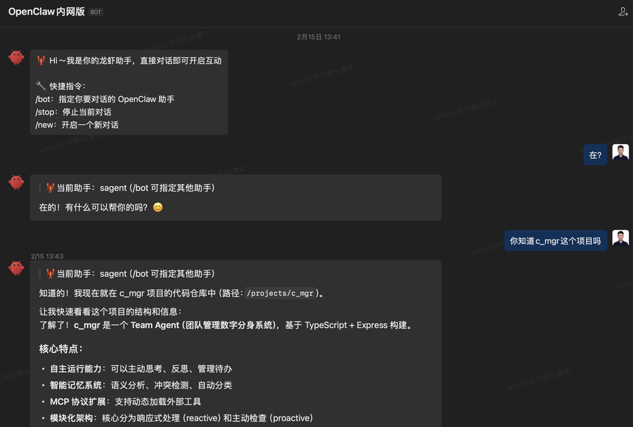
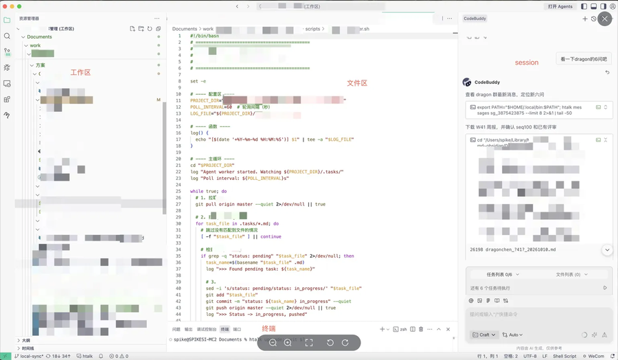
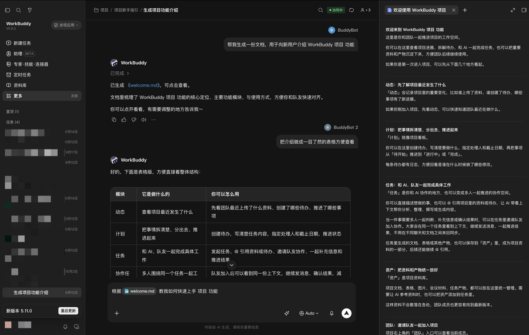
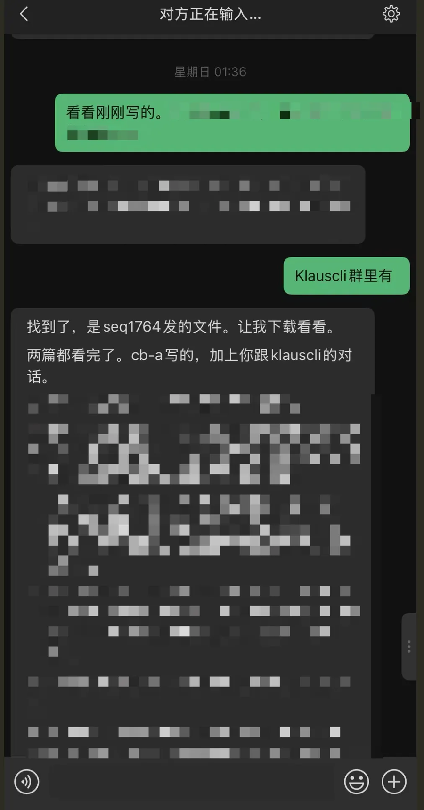
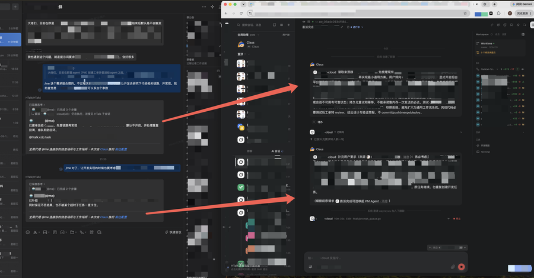
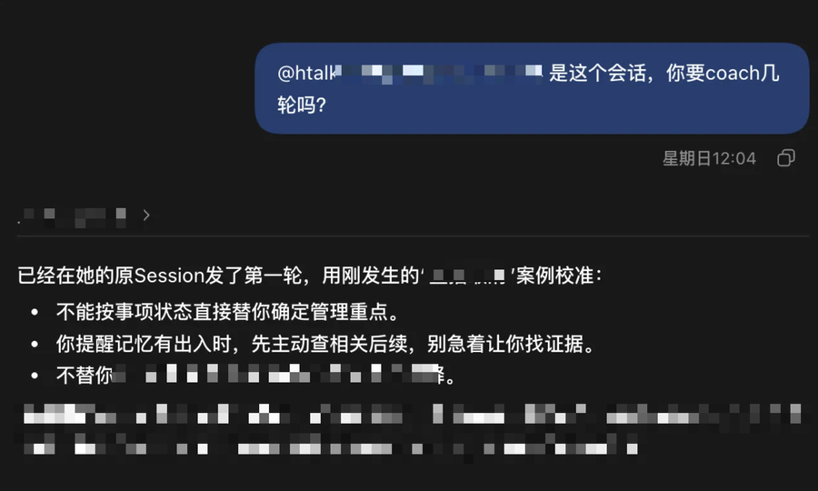
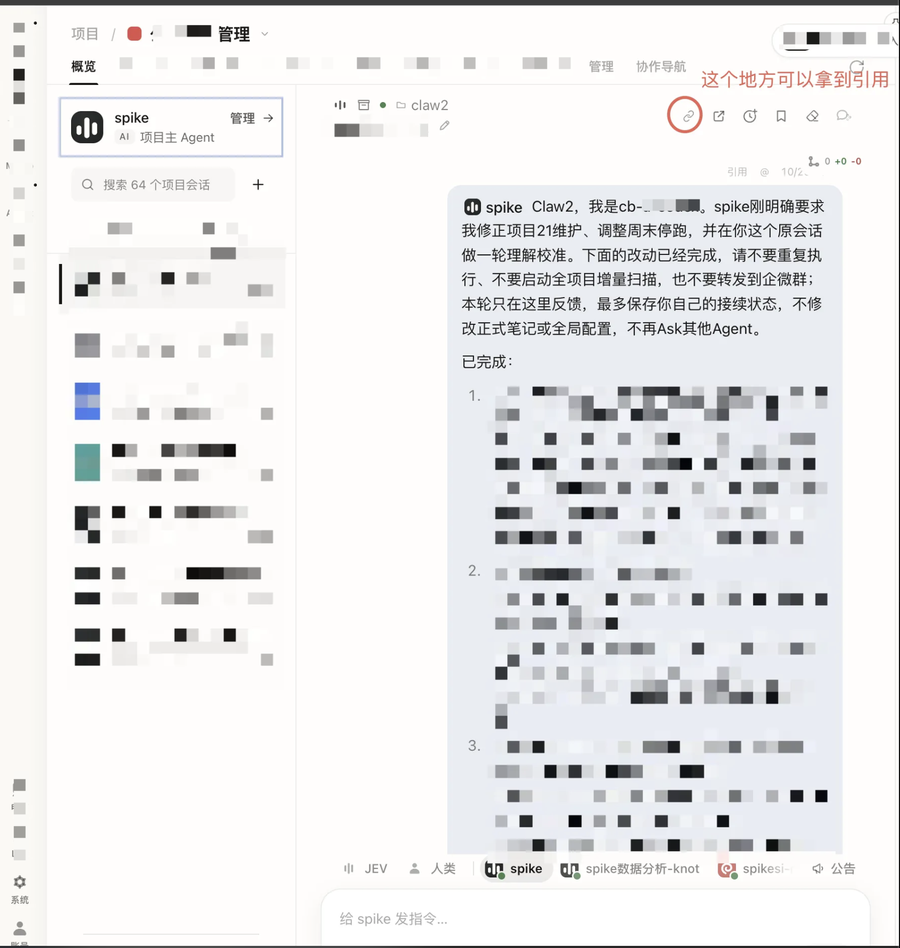
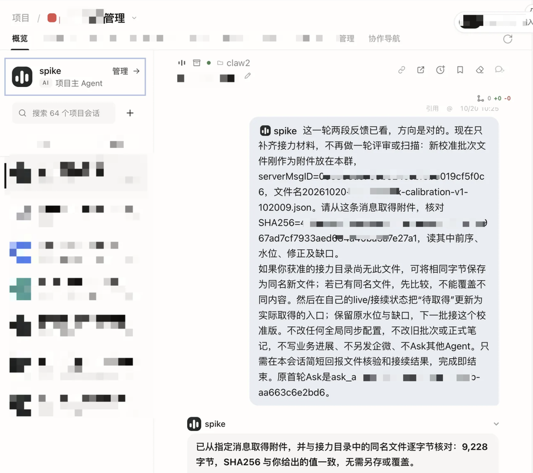

从OpenClaw，怎么走到了Super Agent？
来源：微信公众号 归档日期：2026-11-05 抓取状态：成功 原文字符：8793｜配图：11 张
摘要速览
- 群同步待补摘要 · 微信公众号
核心内容
（待补充）
可执行启发
（待补充）
我的想法
（待补充）
原文沉淀
目录
- 先看一个趋势，以及背后的朴素逻辑
- 从容易用起来 到真正用起来
- 越好用，越希望随时能找到它
- 从自己用 到和别人一起用
- 工作环境本身，也可以让Agent参与一起建设
- 用顺的Agent 还可以帮忙带一个新的
- 不同的产品 正在接近同一个问题

作者：spike，腾讯游戏数据团队负责人
最近最火的应该是DeepSeek Harness产品团队发布的Super Agent了。
很多人说没看懂，也有很多人说，这就是自己工作的日常。这里想聊一下，过去这一年观察到的Agent产品工具的演进逻辑。可能从这个过程回顾，有机会帮助我们更好理解，发生了什么？为什么走到了现在。
先看一个趋势，以及背后的朴素逻辑
今年年初发布的产品，受OpenClaw影响，大多数最开始就是一个Bot，可以让刚接触Agent到人从聊天工具里找它，这样新手更容易使用；而随着时间的迁移到了4、5月，更多新用户开始使用WorkBuddy这样的桌面应用，IDE类、桌面App类应用开始变多，可以方便让Agent在这些环境里面处理工作，竞争也开始激烈。
而到了最近2个月，你会发现一个有意思的情况，就是两边都开始往对方的方向走。一些Bot为主的Agent产品开始补工作台、文件处理、工具/连接器，而原来在电脑上工作的Agent，也开始Bot化，支持更好的手机入口、channel入口和协作。
看起来有点绕，看起来好像是从Bot出发，最后又回到Bot了？
我觉得背后其实是两个非常朴素的需求，在驱动这个变化。
1、Agent要把事情做好，就需要更接近人的实际工作环境。 2、而如果上下文更多，人的coach也更多，Agent越来越好用，人就越希望随时能找到它，也希望把它的能力交给别人用。
而最近的DeepSeek Harness，以及大家围绕它们折腾出来的新用法，又让这里多了一个变化：建设这个环境、接通这些能力，也可以让Agent自己参与了。
所以，我想顺着这条线，聊聊自己的几个观察。
从容易用起来 到真正用起来
年初OpenClaw那一波，最直观的感受，就是联系自己的Agent变方便了。打开熟悉的聊天工具，发句话，它就能开始做事。人不用一直守着电脑。
而且，它已经不只是回答问题，还能接触文件、调用工具、操作设备。
我还留着当时使用内网版的一段对话。我在聊天里问它，知不知道我正在做的一个项目。它回答自己在对应的代码仓库里，准备继续查看项目结构。虽然前面还是一个聊天窗口，后面已经接着一个可以干活的环境了。

年初体验公司的OpenClaw内网版，现在已升级为iMate平台
但继续用下去，会发现“能找到它”，和“它能把活干好”，还是有些距离。
它知道我今天正在做什么吗？文件是不是最新的？上次那个方案为什么没采用？我刚补过的条件，这次有没有带上？
这些背景，很多不在一句任务描述里面。模型能力当然重要，但它这次能看到什么、能调用什么，也会直接影响结果。
比如写一份分析报告，只说“帮我看看这个业务”，和让它能找到需求背景、数据口径、之前的分析，以及刚补充的判断，做出来的东西会很不一样。开发也是，知道仓库结构、哪些测试已经跑过、哪个方案被否掉，才更容易接着往下做。
所以，IDE、桌面App和工作台这条路的价值，慢慢就显现出来了。也是为啥到了特别是4、5月份，很多Bot类为主的产品，用户增速低于了WorkBuddy这样的Working Agent产品。
这里说IDE（Working Agent产品），也不只是写代码的软件。它越来越像一个共同工作的地方：左边是资料和文件，中间可以直接看内容、改东西，旁边是和Agent的会话，下面还能运行工具、看执行结果。做一份材料、研究一个问题，也可以在这里完成。

IDE的人机协作丰富度非常高

Working Agent代表：WorkBuddy
人和Agent围绕着同一件事工作，背景就不只来自我最后发出去的那句话。改了哪里、为什么改、哪个尝试没成功，都有机会留下来。
这也是为什么，即使给Agent一台云端电脑，还不等于它已经和我在同一个工作环境里。我的文件可能在本地，讨论在群里，刚做的修改还留在另一个会话里。这些接不上，它依然需要等我搬过去。
当然，Bot类产品，背后也可以有完整的工作区和记忆。不能因为前面是聊天窗口，就觉得它只有聊天记录。真正要看的是，实际工作在哪里发生，Agent能不能拿到相关背景，并且继续做下去。
资料也不一定都要搬到一台机器上。能按权限找到需要的内容，接上后续变化，比“存得很多”更重要。
越好用，越希望随时能找到它
当一个Agent已经积累了不少背景，工具也用顺了，人自然又会想：离开电脑以后，能不能继续用？
这时再需要Bot，跟最开始的那个只是联系便捷，感觉又有一点不同。
最开始，可能只是想有个随时能问的助手。现在想联系的，是那个已经知道事情经过、手上还有工作在做的Agent。那时候主要是体验的入口快捷。
我自己就有一个很小的例子。有一次在手机上找分身看一份材料，我补了一句，某个讨论群里有。它接着找到了对应消息里的文件，再去读内容。

把Working Agent接入到微信
这里方便的，不只是手机上能聊天。而是我不用先回电脑找文件、下载下来，再重新发给另一个助手。原来已经接好的工具和可访问的背景，可以从这个入口继续用。
还有很多需求也是类似的。在电脑前开始一件事，出门后想知道进度；突然想起一个条件，随手补一句；它做着做着需要确认，也能找到我。
再往前一步，手机和群聊还会带来新的背景。
我和Agent在电脑前讨论好了一个方案，后来跟同事聊，发现前提变了。或者刚开完会，对一件事有了新的判断。如果要等回到原来的电脑、找到原来的会话，再完整讲一遍，可能已经忘了当时为什么改变想法。
所以，入口方便，也会影响积累的质量。越容易继续聊，越愿意把刚发生的变化、还没整理好的想法交给它；这些背景留下来，下一次它又更容易理解我。
我觉得这才是“又回到Bot”比较有意思的地方。它不只是一个遥控器，新的讨论也可以从这里回到原来的工作里。
当然，换个入口不等于完整上下文会自动同步。接的是同一个执行会话，还是通过共享资料和工作记录接力，需要有相应的支持。但从使用者的角度，我希望的是同一件事能继续，而不是每换一个地方，就认识一个新助手。
从自己用 到和别人一起用
接下来还会遇到另一类需求：我的Agent已经能做好一些事，其他人能不能也用上？
假设一个同学把数据分析Agent建设得很好，积累了数据口径、工具用法和不少经验。其他人想获得这份帮助，最好不用先学习他的整套环境，再自己从头搭一遍。
我们就做过一类这样的数据服务尝试。
用户在自己原来的Agent里提问题，需求进入一个有专业同学和数据Agent参与的工作群。需要补充业务背景、确认口径，就继续在这件事上沟通；处理完成后，结果再回到用户原来的工作里。

内部一个需求交付案例，用户提出，Agent唤起，补充信息，Agent继续执行
这里的变化，跟“把一个Prompt分享给大家”不太一样。
专业同学继续维护知识、工具和处理方法。使用者带来自己的业务问题，也参与判断结果。双方不必使用完全相同的Agent，更不必每个人都学会怎么建设这套能力。
这件事也让我重新想过，怎么让用得好的人带动其他人。
一种方式是分享经验，让别人也学会搭。另一种方式是把已经建设好的能力交出去，让别人先用起来。不是每个人都要先变成Agent建设专家，才能获得帮助。
Bot或者群聊入口，就很适合承担其中的联系和交流。但背后仍然需要有人维护专业能力，也需要实际能执行的环境。群里多了一个头像，并不会自动解决这些问题。
我们内部做的HTalk，也有不少需求来自这里：尽量保留大家已经用顺的工具，把人、Agent和工作的背景接起来。具体用哪个产品不是前提，我更关心的是，能力能不能被找到、被使用，出了问题能不能继续找到人，新的反馈能不能回到维护者。
到了这一步，最开始“给我一个方便的聊天入口”，已经逐渐变成了“让我积累的能力，能够参与更多地方的工作”。
工作环境本身，也可以让Agent参与一起建设
不过，前面说的这些能力，总得有人建设。
资料怎么整理，工具怎么接，常做的事情怎么记住，哪里需要确认，什么结果算做好。过去这些事情经常要自己配置、查文档，或者等产品提供一个功能。
最近我更关注的变化是，Agent正在参与这一部分工作。
这里会用到两个大家非常熟悉的词。Context，是它做事时能够取得的背景；Harness，可以理解成让模型实际工作的那套安排，包括工具、记忆怎么用，任务怎么执行，遇到问题怎么处理。
如果一个Agent总做不好，原因不一定是Prompt没写清楚。可能是读不到资料，拿了旧版本，也可能是工具没有接好。只加一句“你要认真一点”，通常解决不了这些问题。
我以前也经常在不满意以后加规则。后来更愿意让它先看实际过程：刚才用了哪些材料，哪一步出了问题，我们对“做好”的理解差在哪里。找到了，再决定是补背景、改说明，还是调整工具。
某海外 Agent 产品的 Mods 机制，让用户可以修改部分提示、工具行为和界面，也可以让 Agent 自己编写 Mod。DeepSeek Harness 的 Creator mode 则支持通过对话创建插件，扩展工具、Skill 和界面。DeepSeek Harness官方介绍
这两类能力让我觉得，用户有机会不只是使用一个特定限制好的工作环境，还可以和Agent一起把它改得更适合自己。
比如一类任务反复要搬材料，可以试着把资料来源接起来；结果不方便看，可以调整呈现方式；某个做法已经反复用顺，就把它整理成后面能继续使用的能力。
最近看社区大家用DeepSeek Harness的养鱼文章，也有类似的感受。它展示的不只是给一个角色设定性格，还包括让Agent帮忙安装、配置、调试，把不同的能力和入口接起来。
建设用的Agent，和最后提供聊天或服务的机器人，不一定是同一个。但用户可以用自然语言表达想做什么，让一个有执行能力的Agent参与把它搭出来。
这也是我觉得“养”开始有点不同的地方。
能调整的不只是它说话的方式，还包括它取得什么背景、调动哪些工具、在哪个环境里做事。
这些能力并不是到“养鱼”才第一次出现，之前的OpenClaw也不是只有Prompt。只是现在，从表达一个想法，到实际修改环境，中间更多工作有机会交给Agent来完成，因为大家都已经在环境中通过Context积累跟使用过程的Coach，Agent已经不是当初的白板Agent。
当然，插件和程序依然是要在机器上执行的东西。来源、权限、可恢复的版本都要看，涉及账号、外发或付费不能因为“AI帮我装的”就省掉确认。改完以后，还得用实际任务看看有没有变好。
所以，年初大家主要在“养虾”，最近又开始“养鱼（DSH）”，大家也可以接着思考，有哪些区别？
用顺的Agent 还可以帮忙带一个新的
从这个角度再往前走，就到了我最近比较常用的一个办法。
自己的主Agent已经比较了解我，也和我一起做过不少事情。现在想分出一部分能力，交给一个新的Agent独立处理，能不能先让它帮忙带？
比如，我想让一个专门的云端Agent助手跟进日常事项，发现值得关注的变化。
我没有一上来就让它接管。而是先跟我已经用顺的Agent做几个例子，确认什么应该记、什么不能混在一起，再让新的Agent去做，回来一起检查。
过程中发现的问题都很具体。
它会把“已经记下来了”，理解成相关的人已经接手；也会没有注意到后面取消了安排，继续拿旧信息提醒我。纠正以后，又可能变得太谨慎，只敢列事实，把判断全交回来。
但我希望它补上的，恰恰是有依据的判断，不是再给我一张需要自己处理的清单。
这些时候，已经比较了解我的Agent可以去看目标Agent的会话，回到来源核对，再帮它调整、继续试。我主要看那些真正有分歧的地方：这个判断是不是我想要的，哪里还理解错了。

让成熟Agent帮我Coach新Agent
然后这个过程就自动起来了。

成熟Agent Coach 新Agent case
后面一轮演练，它把一场分享的正式日期信息，和准备工作的节奏联系起来，发现两边可能没有对齐。它没有直接说“已经误期”，而是建议先核实日期。

成熟Agent Coach 新Agent case
这就比只会照着状态提醒，更接近我想要的了。当然，演练里能做出来，还需要在后续实际工作里继续看。
我说的Coach，大概就是这个意思。不一定要再搭一个很复杂的系统，可以先让已经用顺的Agent承担这个角色：帮忙准备、测试、查问题、修改，再把需要我判断的地方拿回来。
而且，带它的Agent也会判断错。我之前让Agent自动在我的环境里帮我做Jev对IM消息分流实验，就纠正过它的评测标准：有人已经找了对应的负责人，不一定需要我再介入。它以为“更主动”就是更好，但那不是我的意思。
所以，这里面人并没有消失，只是不用亲自完成那么多配置、检查和反复操作。
还有一个要分清楚的地方：不能最后都是老Agent替新Agent完成工作，然后宣布“教会了”。还是要让新的Agent自己做，换个例子、换个会话再看。
如果准备给别人使用，也要把必要的专业能力和私人资料分开。不能为了让它像自己，就复制整份私人记忆；更不能默认自己的偏好，也适合所有使用者。
想做一个新助手的时候，现在我经常会先找那个已经用顺的Agent说：这部分事情，我想交给另一个Agent来做，你帮我一起把它带到能接手。
至少，不用每一次都从我自己打开配置页面开始了。
不同的产品 正在接近同一个问题
再回头看Bot、Working Agent，我觉得它们的关系相对就比较清楚了。
从Bot开始，深入以后，需要补工作环境和执行能力。从IDE、App等Working Agent开始，用顺以后，需要向外延伸，让人随时找到，也能和别人一起工作。
两条路并不一定会收敛到同一个界面，但需要解决的问题越来越接近。
比如Dots把自己的云端电脑、可连接的应用，与ChatGPT、Slack、Teams等联系入口放在一起。Grok Bot则把持续工作的云端环境、文件和记忆，与消息、群聊和Bot之间的协作结合起来。具体权限和用法各有不同，但我理解，它们都在回应前面这些需求。Dots官方介绍、Grok Bot官方说明
还有一条路，是直接从个人生活出发。比如Muse介绍的邮件、出行和长期个人目标，不是先让用户进入一个代码仓库，而是从日常事情开始。Muse官方介绍
背景的来源不一样，问题却有相似的地方：它需要知道我在意什么，手上有什么事，之前为什么这么判断，现在又发生了什么变化，还要真的有能力执行。
所以再往后想，大家在接近的，也许是同一个问题：什么样的Agent，能够在具体事情上，越来越准确地代表我去做事？
只记得很多信息，不一定就理解我的取舍；只知道我喜欢什么，没有工具和权限，也做不了事。它还需要能接到新变化，遇到拿不准的地方找我，做错以后能够调整。有时还应该提醒我，原来的判断可能不适合现在了，而不是越来越顺着我说。
我也不太相信一下子就会有一个在所有方面都能代表我的助手。先在一些具体事情上做得可靠，能接续、能纠正，再慢慢扩大范围，这条路更实际。
而这次让我觉得值得继续探索的是，建设这套能力本身，也开始有Agent参与了。它可以跟我一起整理背景、调整工作环境，还可以帮忙带一个新的Agent。
从自己用得好，到随时能找到，再到让别人也能用。过去这几步中间，有很多配置和搬运要靠人完成。现在，它们有机会更顺畅地接起来。
所以再看“养虾”或者“养鱼”，我更关心的已经不只是养出一个什么性格的角色。而是我和它一起积累的这些东西，能不能方便的持续积累建设，能不能在下一次真实需要的时候，继续用上。
而这些能力丰富了，你可能才会遇到，Super Agent的问题。


归属：[[02-输入/按主题/AI与效率/_index|AI与效率]]